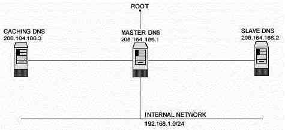

L
i n u x P a r
k
при
поддержке ВебКлуба |
Глава 14 Серверное программное обеспечение (BIND/Сервис DNS)
(Часть1)В этой главе
Linux DNS и
BIND сервер
Конфигурации
Кэширующий
DNS-сервер
Основной
сервер имен
Вторичный
сервер имен
Организация
защиты ISC BIND/DNS
Административные
средства DNS
Утилиты
пользователя DNS
|
|
Краткий обзор.
Сейчас, когда мы установили все программное обеспечение
предназначенное для зашиты сервера, самое время улучшить и настроить его сетевую
часть. DNS наиболее важный сервис для IP сетей, и поэтому, все Linux машины -
клиенты DNS, должны быть, как минимум, настроены на функцию кэширования. Такая
настройка на клиентской машине уменьшит загрузку сервера. Кэширующий сервер ищет
ответы на DNS запросы и сохраняет их до следующего раза. В результате время
ответа на тот же запрос сильно сокращается.
Из соображений безопасности, важно, чтобы между внутренними
компьютерами корпоративной сети и внешними компьютерами не существовало DNS,
гораздо безопаснее использовать просто IP адреса для соединения с внешними
машинами и наоборот.
В нашей конфигурации, мы будем запускать BIND/DNS от имени не
root- пользователя и будем chroot-ить его окружение. Мы также предоставим вам
три различные конфигурации: одну для простого кэширующего сервера (клиент), одну
для вторичного сервера (secondary) и одну для основного (master) сервера.
Конфигурацию кэширующего сервера мы будем использовать на
машине, которая не будет выполнять функции основного и вторичного DNS серверов.
Обычно, один из серверов выступает в роли основного сервера, а другой
подчиненного (slave).

На этой картинке изображена конфигурация, которую мы используем
в этой книге.
Эти инструкции предполагают.
Unix-совместимые
команды.
Путь к исходным кодам “/var/tmp” (возможны другие
варианты).
Инсталляция была проверена на Red Hat Linux 6.1 и 6.2.
Все шаги
инсталляции осуществляются суперпользователем “root”.
ISC BIND версии
8.2.2-patchlevel5
Пакеты.
Домашняя страница ISC BIND: http://www.isc.org/
FTP сервер
ISC BIND: 204.152.184.27
Вы
должны скачать: bind-contrib.tar.gz, bind-doc.tar.gz, bind-src.tar.gz
Тарболы. Хорошей идеей будет создать список файлов
установленных в вашей системе до инсталляции BIND и после, в результате, с
помощью утилиты diff вы сможете узнать какие файлы были установлены.
Например,
До инсталляции:
find /* >
DNS1
После инсталляции:
find /* >
DNS2
Для получения списка установленных файлов:
diff DNS1 DNS2 > DNS-install
Раскройте тарбол:
[root@deep /]#
mkdir /var/tmp/bind
[root@deep /]# cp bind-contrib.tar.gz
/var/tmp/bind/
[root@deep /]# cp bind-doc.tar.gz /var/tmp/bind/
[root@deep
/]# cp bind-src.tar.gz /var/tmp/bind/
Мы создаем каталог с именем “bind” и манипулируем tar архивами,
копируя их в новый каталог.
Переходим в новый каталог bind (cd /var/tmp/bind) и
разархивируем tar файлы:
[root@deep bind]# tar
xzpf bind-contrib.tar.gz
[root@deep bind]# tar xzpf
bind-doc.tar.gz
[root@deep bind]# tar xzpf bind-src.tar.gz
Конфигурирование и оптимизация.
Шаг 1.
ISC BIND не должен запускаться с правами root, поэтому мы
должны завести пользователя не имеющего shell доступа.
[root@deep /]# useradd -c “DNS Server” -u 53 -s /bin/false -r -d
/chroot/named named 2>/dev/null || :Шаг 2
Редактируем файл Makefile.set (vi src/port/linux/Makefile.set)
и добавляем или модифицируем его:
'CC=egcs
-D_GNU_SOURCE'
'CDEBUG=-O9 -funroll-loops -ffast-math -malign-double
-mcpu=pentiumpro -arch=pentiumpro -fomit-frame-pointer -fno-exceptions
-g’
'DESTBIN=/usr/bin'
'DESTSBIN=/usr/sbin'
'DESTEXEC=/usr/sbin'
'DESTMAN=/usr/man'
'DESTHELP=/usr/lib'
'DESTETC=/etc'
'DESTRUN=/var/run'
'DESTLIB=/usr/lib/bind/lib'
'DESTINC=/usr/lib/bind/include'
'LEX=flex
-8 -I'
'YACC=yacc
-d'
'SYSLIBS=-lfl'
'INSTALL=install'
'MANDIR=man'
'MANROFF=cat'
'CATEXT=$$N'
'PS=ps
p'
'AR=ar crus'
'RANLIB=:'
Первая строки представляет имя вашего GCC компилятора (egcs), а
вторая ваши флаги оптимизации. Срока “DESTLIB=” определяет путь, где будут
располагаться файлы сервера BIND
Компиляция и оптимизация.
Введите следующие команды на вашем терминале
[root@deep bind]# make -C src
[root@deep bind]# make
clean all -C src SUBDIRS=../doc/man
[root@deep bind]# make install -C
src
[root@deep bind]# make install -C src SUBDIRS=../doc/man
Команда “make” компилирует все исходные кода в двоичные
исполняемые файлы, и затем команды “make install” инсталлируют исполняемые и
сопутствующие им файлы в заданный каталог.
[root@deep bind]# strip /usr/bin/addr
[root@deep bind]# strip
/usr/bin/dig
[root@deep bind]# strip /usr/bin/dnsquery
[root@deep bind]#
strip /usr/bin/host
[root@deep bind]# strip /usr/bin/nslookup
[root@deep
bind]# strip /usr/bin/nsupdate
[root@deep bind]# strip
/usr/bin/mkservdb
[root@deep bind]# strip /usr/sbin/named
[root@deep
bind]# strip /usr/sbin/named-xfer
[root@deep bind]# strip
/usr/sbin/ndc
[root@deep bind]# strip /usr/sbin/dnskeygen
[root@deep
bind]# strip /usr/sbin/irpd
[root@deep bind]# mkdir /var/named
Команда “strip” удаляет все символы из объектных файлов Это
уменьшает размер исполняемых файла. Вследствие чего, улучшается
производительность. “mkdir” создает новый каталог “/var/named”.
Очистка
после работы.[root@deep /]# cd
/var/tmp
[root@deep tmp]# rm -rf bind/
Эти команды будут удалять все исходные коды, которые мы
использовали при компиляции и инсталляции ISC BIND/DNS.
Конфигурационные файлы различный сетевых сервисов сильно
зависят от ваших нужд и архитектуры. Люди могут устанавливать DNS сервер дома
как кэширующий сервер, а в компании как основной, подчиненный или кэширующий DNS
сервера.
Все программное обеспечение, описанное в книге, имеет
определенный каталог и подкаталог в архиве “floppy.tgz”, включающей все
конфигурационные файлы для всех программ. Если вы скачаете этот файл, то вам не
нужно будет вручную воспроизводить файлы из книги, чтобы создать свои файлы
конфигурации. Скопируйте файл из архива и измените его под свои требования.
Затем поместите его в соответствующее место на сервере, так как это показано
ниже. Файл с конфигурациями вы можете скачать с адреса:
http://www.openna.com/books/floppy.tgz
Для запуска кэширующего сервера имен необходимы следующие
файлы, вы должны их либо создать либо скопировать в нужные каталоги
сервера
Копируйте файл named.conf в каталог “/etc/”.
Копируйте файл
db.127.0.0 в каталог “/var/named/”.
Копируйте файл db.cache в каталог
“/var/named/”.
Копируйте скрипт named в каталог “/etc/rc.d/init.d/”.
Для запуска основного (master) сервера имен необходимы
следующие файлы, вы должны их либо создать либо скопировать в нужные каталоги
сервера
Копируйте файл named.conf в каталог “/etc/”.
Копируйте файл
db.127.0.0 в каталог “/var/named/”.
Копируйте файл db.cache в каталог
“/var/named/”.
Копируйте файл db.208.164.186 в каталог
“/var/named/”.
Копируйте файл db.openna в каталог “/var/named/”.
Копируйте
скрипт named в каталог “/etc/rc.d/init.d/”.
Для запуска подчиненного сервера имен необходимы следующие
файлы, вы должны их либо создать либо скопировать в нужные каталоги
сервера.
Копируйте файл named.conf в каталог “/etc/”.
Копируйте файл
db.127.0.0 в каталог “/var/named/”.
Копируйте файл db.cache в каталог
“/var/named/”.
Копируйте скрипт named в каталог “/etc/rc.d/init.d/”.
Вы можете взять эти файлы из нашего архива floppy.tgz.
Кэширующий сервер имен не авторитетен для любых доменов, кроме
0.0.127.in- addr.arpa (localhost). Он ищет имена как внутри, так и за пределами
ваших зон, как на первичных, так и на подчиненных серверах. В отличии от них,
кэширующий сервер инициирует поиск имен в пределах вашей зоны, спрашивая один из
первичных или подчиненных серверов.
Файлы необходимые для установки простого кэширующего сервера
имен:
named.conf
db.127.0.0
db.cache
скрипт
named
Конфигурация файла “/etc/named.conf” для простого кэширующего
сервера имен.
Используйте эту конфигурацию для всех серверов в вашей сети,
которые не выступают как основной или подчиненный сервера имен. Установка
простого кэширующего севера на локальной клиентской машине уменьшит загрузку
первичного сервера. Многие пользователи, использующие dialup соединения, могут
использовать эту конфигурацию. Создайте файл named.conf (touch /etc/named.conf)
и добавьте в него следующие строки:
options {
directory "/var/named";
forwarders { 208.164.186.1; 208.164.186.2; };
forward only;
};
//
// a caching only nameserver config
zone "." in {
type hint;
file "db.cache";
};
zone "0.0.127.in-addr.arpa" in {
type master;
file "db.127.0.0";
};В строке “forwarder” 208.164.186.1 и 208.164.186.2 это IP адреса
ваших основного (Master) и подчиненного (Slave) BIND/DNS серверов. Это могут
быть также адреса DNS серверов вашего провайдера или вообще любые другие сервера
имен.
Для улучшения безопасности вашего BIND/DNS сервера вы можете
запретить вашему серверу контактировать со сторонними серверами, если свои
сервера не работают или не отвечают. С опцией “forward only”, установленной в
файле “named.conf”, сервер имен не будет контактировать с другими серверами для
поиска информации, если сервера на которые перенаправляются запросы не
отвечают.
Конфигурация файла “/var/named/db.127.0.0” для простого кэширующего сервера
имен.
Используйте эту конфигурацию для всех серверов в вашей сети,
которые не выступают как основной или подчиненный сервера имен. Файл
“db.127.0.0” распространяется на сеть loopback. Создайте его в
“/var/named/”.
Создайте файл db.127.0.0 (touch /var/named/db.127.0.0) и
внесите в него следующие строки:
$TTL 345600
@ IN SOA localhost. root.localhost. (
00 ; Serial
86400 ; Refresh
7200 ; Retry
2592000 ; Expire
345600 ) ; Minimum
IN NS localhost.
1 IN PTR localhost.
Конфигурация файла “/var/named/db.cache” для простого кэширующего сервера
имен.
Перед запуском вашего DNS сервера необходимо взять файл
“db.cache” и поместить его в каталог “/var/named/”. “db.cache” определяет
сервера корневой зоны.
Используйте следующие команды на другом UNIX компьютере для
запроса нового файла db.cache для вашего DNS сервера или возьмите его с вашего
Red Hat Linux CD-ROM:
Для запроса нового файла db.cache для вашего DNS сервера
используйте следующую команду:
[root@deep]# dig
@.aroot-servers.net . ns > db.cache
Не забудьте скопировать файл db.cache в каталог “/var/named/”
на вашем сервере после получения его из Интернет.
ЗАМЕЧАНИЕ. Внутренние адреса, подобные 192.168.1/24, не
включаются в файлы конфигурации DNS из соображений безопасности. Очень важно,
чтобы между внутренними хостами и внешними не существовал DNS.
Первичный мастер сервер имен читает файл с данными о зоне и
отвечает за эту зону.
Файлы необходимые для настройки первичного мастер сервера
имен:
named.conf
db.127.0.0
db.208.164.186
db.openna
db.cache
скрипт
named
Конфигурация файла “/etc/named.conf” для первичного мастер сервера
Используйте эту конфигурацию для серверов, которые выступают
как мастер сервер имен. После компиляции DNS, вам необходимо установить
первичное доменное имя сервера. Мы используем “openna.com”, как пример домена,
предполагая, что используем IP сеть с адресом 208.164.186.0. Для этого, добавьте
следующие строки файл “/etc/named.conf”.
Создайте файл named.conf (touch /etc/named.conf) и добавьте
следующее:
options {
directory "/var/named";
fetch-glue no;
recursion no;
allow-query { 208.164.186/24; 127.0.0/8; };
allow-transfer { 208.164.186.2; };
transfer-format many-answers;
};
// Эти файлы не привязаны к какой-либо зоне
zone "." in {
type hint;
file "db.cache";
};
zone "0.0.127.in-addr.arpa" in {
type master;
file "db.127.0.0";
};
// Это файл вашей первичной зоны
zone "openna.com" in {
type master;
file "db.openna ";
};
zone "186.164.208.in-addr.arpa" in {
type master;
file "db.208.164.186";
};
Опция “fetch-glue no” может использоваться в связке с опцией
“recursion no” для предотвращения роста и разрушения кэша сервера. Также,
отключение рекурсии переведет ваш сервер имен в пассивный режим, говорящий ему
никогда не посылать запросы от имени другого сервера имен или ресолвера. Не
рекурсивные сервера имен очень сложно обмануть при помощи атаки spoof, так как
они не отправляют никакие запросы и следовательно не кэшируют никакие
данные.
В строке “allow-query”, 208.164.186/24 и 127.0.0/8 определяются
IP адреса, которым разрешено осуществлять обычные запросы к серверу.
В строке “allow-transfer”, 208.164.186.2 это IP адрес, которому
разрешается принимать пересылки зон с сервера. Вы должны обеспечить, чтобы
только ваши вторичные сервера могли получать зоны с сервера. Эта информация
часто используется спаммерами и IP spoofers.
ЗАМЕЧАНИЕ. Опции “recursion no”, “allow-query” и
“allow-transfer” в файле “named.conf” используются для обеспечения большей
безопасности сервера имен.
Конфигурация файла “/var/named/db.127.0.0” для основного и вспомогательного
серверов имен.
Этот файл может быть использован как на основном, так и на
вспомогательном серверах. Файл “db.127.0.0” описывает сеть loopback. Создайте
файл db.127.0.0 (touch /var/named/db.127.0.0) и добавьте в него следующую
информацию:
; Revision History: April 22, 1999 - [email protected]
; Start of Authority (SOA) records.
$TTL 345600
@ IN SOA deep.openna.com. admin.mail.openna.com. (
00 ; Serial
86400 ; Refresh
7200 ; Retry
2592000 ; Expire
345600 ) ; Minimum
; Name Server (NS) records.
NS deep.openna.com.
NS mail.openna.com.
; only One PTR record.
1 PTR localhost.
Конфигурация файла “/var/named/db.208.164.186” для основного сервера
имен.
Используйте эту конфигурацию для сервера, который выступает в
вашей сети, как основной сервер имен. Файл “db.208.164.186” привязывает имена
хостов к адресам. Создайте следующий файл db.208.164.186 (touch
/var/named/db.208.164.186) в каталоге “/var/named/”:
; Revision History: April 22, 1999 - [email protected]
; Start of Authority (SOA) records.
$TTL 345600
@ IN SOA deep.openna.com. admin.mail.openna.com. (
00 ; Serial
86400 ; Refresh
7200 ; Retry
2592000 ; Expire
345600 ) ; Minimum
; Name Server (NS) records.
NS deep.openna.com.
NS mail.openna.com.
; Addresses Point to Canonical Names (PTR) for Reverse lookups
1 PTR deep.openna.com.
2 PTR mail.openna.com.
3 PTR www.openna.com.
Конфигурация файла “/var/named/db.openna” для основного сервера имен
Используйте этот файл для сервера выступающего в роли основного
сервера имен. Файл “db.openna” привязывает адреса к именам хостов. Создайте файл
db.openna в каталоге “/var/named/” (touch /var/named/db.openna):
; Revision History: April 22, 1999 - [email protected]
; Start of Authority (SOA) records.
$TTL 345600
@ IN SOA deep.openna.com. admin.mail.openna.com. (
00 ; Serial
86400 ; Refresh
7200 ; Retry
2592000 ; Expire
345600 ) ; Minimum
; Name Server (NS) records.
NS deep.openna.com.
NS mail.openna.com.
; Mail Exchange (MX) records.
MX 0 mail.openna.com.
; Address (A) records.
localhost A 127.0.0.1
deep A 208.164.186.1
mail A 208.164.186.2
www A 208.164.186.3
; Aliases in Canonical Name (CNAME) records.
;www CNAME deep.openna.com.
Конфигурация файла “/var/named/db.cache” для основного и
подчиненного серверов имен
Перед запуском вашего DNS сервера вы должны сделать копию файла
“db.cache” и поместить его в каталог “/var/named/”. Он говорит серверу, какие
сервера отвечают за корневую зону.
Используйте следующую команду на другом UNIX компьютере для
получения нового файла db.cache или возьмите его с вашего Red Hat Linux
CD-ROM:
[root@deep /]# dig @.aroot-servers.net .
ns > db.cache
Не забудьте скопировать файл “db.cache” в каталог “/var/named/”
после получения его из Интерент.
Основное назначение вторичного сервера имен – разделение
нагрузки с основным сервером, и обработка запросов, если основной сервер не
работает. Вторичный сервер загружает данные через сеть с другого сервера имен
(обычно основного, но может и с другого вторичного). Этот процесс называется
пересылкой зоны.
Файлы необходимые для установки вторичного сервера
имен:
named.conf
db.127.0.0
db.cache
скрипт named
Конфигурация файла “/etc/named.conf” для вторичного сервера имен
Используйте эту конфигурацию для сервера вполняющего роль
вторичного сервера имен. Вы должны модифицировать файл “named.conf” на вторичном
сервере имен. Измените каждое вхождение master на slave, сделав исключение для
“0.0.127.in-addr.arpa”, и добавьте строку с IP адресом первичного сервера, как
это показано ниже.
Создайте файл named.conf (touch /etc/named.conf) и добавьте в
него:
options {
directory "/var/named";
fetch-glue no;
recursion no;
allow-query { 208.164.186/24; 127.0.0/8; };
allow-transfer { 208.164.186.1; };
transfer-format many-answers;
};
// These files are not specific to any zone
zone "." in {
type hint;
file "db.cache";
};
zone "0.0.127.in-addr.arpa" in {
type master;
file "db.127.0.0";
};
// These are our slave zone files
zone "openna.com" in {
type slave;
file "db.openna";
masters { 208.164.186.1; };
};
zone "186.164.208.in-addr.arpa" in {
type slave;
file "db.208.164.186";
masters { 208.164.186.1; };
};
Этот файл говорит серверу, что он является вторичным для зоны
“openna.com” и должен брать информацию об этой зоне с хоста “208.164.186.1”.
Вторичному серверу имен нет необходимости получать все файлы (db) через сеть,
так как db файлы “db.127.0.0” и “db.cache” одинаковы как для основного так и для
вторичных серверов, поэтому вы можете создать их локальные копии на вторичном
сервере.
Копируйте файл “db.127.0.0” с основного сервера на подчиненный.
Копируйте файл “db.cache” с основного сервера на
подчиненный.
Конфигурация скрипта “/etc/rc.d/init.d/named” для всех типов серверов
имен
Сконфигурируйте ваш скрипт “/etc/rc.d/init.d/named” для запуска
и остановки демона BIND/DNS. Этот скрипт может быть использован для всех типов
серверов (кэширующего, основного или подчиненного).
Создайте следующий скрипт named (touch
/etc/rc.d/init.d/named):
#!/bin/sh
#
# named Этот скрипт командного интерпретатора отвечает за запуск и
# остановку (BIND DNS сервера).
#
# chkconfig: - 55 45
# description: named (BIND) is a Domain Name Server (DNS) \
# that is used to resolve host names to IP addresses.
# probe: true
# Source function library.
. /etc/rc.d/init.d/functions
# Source networking configuration.
. /etc/sysconfig/network
# Check that networking is up.
[ ${NETWORKING} = "no" ] && exit 0
[ -f /usr/sbin/named ] || exit 0
[ -f /etc/named.conf ] || exit 0
RETVAL=0
# See how we were called.
case "$1" in
start)
# Start daemons.
echo -n "Starting named: "
daemon named
RETVAL=$?
[ $RETVAL -eq 0 ] && touch /var/lock/subsys/named
echo
;;
stop)
# Stop daemons.
echo -n "Shutting down named: "
killproc named
RETVAL=$?
[ $RETVAL -eq 0 ] && rm -f /var/lock/subsys/named
echo
;;
status)
/usr/sbin/ndc status
exit $?
;;
restart)
$0 stop
$0 start
;;
reload)
/usr/sbin/ndc reload
exit $?
;;
probe)
# named знает как правильно перезагружаться; мы не хотим использовать
# linuxconf для перезагрузок
/usr/sbin/ndc reload >/dev/null 2>&1 || echo start
exit 0
;;
*)
echo "Usage: named {start|stop|status|restart}"
exit 1
esac
exit $RETVAL
Сейчас, надо сделать этот скрипт исполняемым и изменить права
доступ, принятые по умолчанию:
[root@deep]# chmod
700 /etc/rc.d/init.d/named
Создайте символические rc.d ссылки для BIND/DNS:
[root@deep]# chkconfig --add named
Скрипт BIND/DNS не будет автоматически стартовать, когда вы
перезагружаете сервер. Чтобы изменить это, выполните следующую команду:
[root@deep]# chkconfig --level 345 named on
Запустите вручную ваш DNS сервер:
[root@deep]# /etc/rc.d/init.d/named start
Starting named: [ OK
]